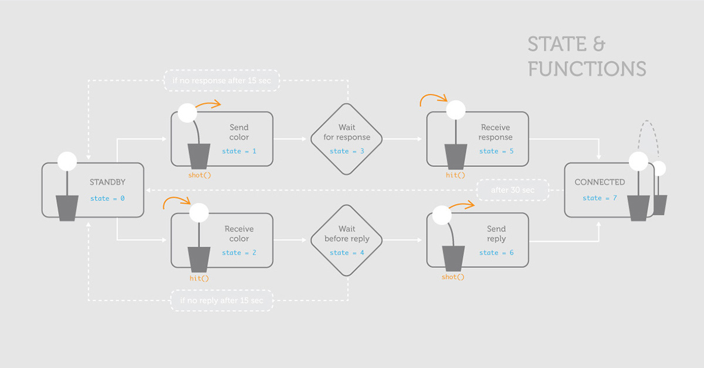

2012 - TANGIBLE INTERFACE
DANDYLIGHT
An ice-breaking game
Social media allow us to be always connected with the people we know, but at the same time we are isolated behind our screens, losing the physicality of human relations. Another fact is that, with globalization leveling knowledge and habits, the amusement of discovery often comes from simple things like an encounter with new people around you. Dandylight, sparked from that premises, connects people who share the same space. It is a network of objects, a physical interface inspired by the beauty of nature, that lets people engage in a playful communication made of lights. Now it’s up to you to play. Everyone is interesting!
How it works - Dandylight allows people to shoot colors at other people who take their fancy. With its funny play of lights it creates an atmosphere that eases socialization. It is an effective device, in the way it can create connections, and it is equally simple. In fact we were able to develop a fully working prototype, which differs from the final product only by the microcontroller used (Arduino is too expensive for mass production) and the paper flower (which would be die-cut if mass-produced, and more precise in shape).
Rules of play - You interact with it easily, by rotating the vase and shooting your color by pulling the leaf, another Dandylight receives your color and so on… It’s a self learning interaction, because with a process of trial and error you quickly understand how it works. This is also because we avoided strict rules for the gameplay, it’s just an exchange of colors. Doing this we let people interpret the working in their own way and do whatever they want. This approach, allows a broad range of uses because people adapt the point-and-shoot action to the always changing context they encounter.
My contribution - In this project I was involved with the user research, the interaction sequence, and in the end I was responsible for generating the final code. For the final presentation, I shoot the still life pictures of the device, documented the code preparing flow diagrams, and created schematics of components.
Things learnt - The importance of testing ideas with physical things as soon as possible. While designing the interaction sequence, I remember ourselves struggling to keep in memory the sequence of colors shoot from one device to another, we weren’t going anywhere. Cutting pieces of colored paper and exchanging them instead of using our memory, gave us immediately a feeling of the whole gameplay, and we quickly improved the idea.
Team - Tommaso Bertagnin, Loris Bottello, Stella Morelli, Valeria Sanguin
Tutors - Gillian Crampton Smith, Philip Tabor
Tools used - Arduino, Adobe Photoshop, Adobe Lightroom
Link to the full documentation